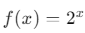
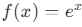

Eksponensial
Pengertian Eksponensial
Fungsi eksponensial adalah fungsi matematika yang melibatkan bilangan berpangkat variabel, dan biasanya ditulis dalam bentuk

- ( a ) adalah konstanta yang mengubah skala atau posisi fungsi.
- ( b ) adalah basis eksponensial, biasanya ( b > 0 ) dan ( b ≠ 1 ).
- ( x ) adalah variabel yang berada di dalam eksponen.
Fungsi eksponensial memiliki sifat penting yang membedakannya dari jenis fungsi lainnya, di antaranya adalah:
- Pertumbuhan atau Peluruhan yang Cepat: Fungsi eksponensial dapat menggambarkan proses yang tumbuh atau menyusut dengan sangat cepat. Misalnya, dalam kasus pertumbuhan populasi atau peluruhan radioaktif, laju perubahan jumlahnya sebanding dengan nilai yang ada pada waktu itu.
- Basis e: Salah satu basis eksponensial yang sangat penting dalam kalkulus adalah e, yaitu bilangan yang kira-kira bernilai 2.718. Fungsi eksponensial dengan basis e dikenal dengan nama fungsi logaritma natural atau fungsi eksponensial naturalfungsi eksponensial natural, yang memiliki sifat turunan dan integral yang sangat sederhana dan berguna dalam banyak aplikasi matematika dan fisika.
Contoh Fungsi Eksponensial

Fungsi ini menggambarkan pertumbuhan eksponensial dengan basis 2.

Fungsi ini adalah contoh fungsi eksponensial dengan basis e, yang sering digunakan dalam model matematika untuk pertumbuhan dan peluruhan alami